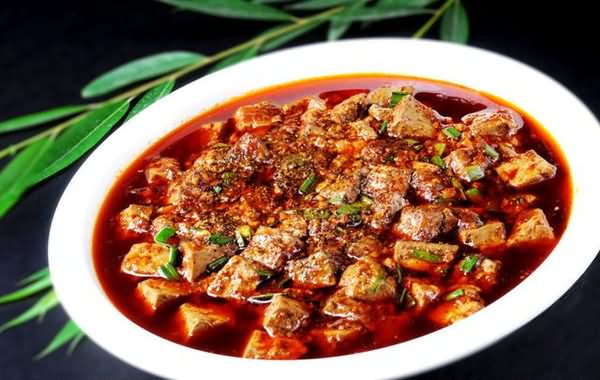

Mapo Doufu

Description:
This is one of those extremely simple recipes that is a staple of its culture, yet it is so difficult to find an authentic recipe.
Ingredients:
- 1 tablespoon red chile flakes
- 1 tablespoon hot water
- 1/4 cup soybean oil
- 1 1/2 teaspoons Sichuan peppercorns
- 1 large clove garlic, sliced thin
- 1/4 pound ground pork
- 2 1/2 tablespoons doubanjiang (spicy broad bean paste)
- 15 ounce soft tofu, drained and cubed
- 1/4 cup water
- 3 green onions, sliced
Steps:
- Place red pepper flakes in a small bowl of hot water. Let soak until softened.
- Heat a wok over medium-high heat until very hot; pour in oil. Add peppercorns; toss briefly until aromatic. Add garlic; stir until aromatic, 10 to 15 seconds. Add ground pork; saute until until browned and crumbly, about 2 minutes.
- Mix doubanjiang and red chile flakes into the pork mixture. Let simmer for about 1 minute. Add tofu and water; gently stir to coat. Bring to a boil. Reduce heat to medium-low; let simmer until flavors meld, 3 to 4 minutes. Remove from heat and toss in green onions.